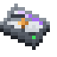
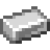
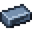
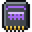

Reference: pages
Reference
2M Pressurized Storage Drive

encodedlogistics:pressurized_storage_drive_2m · Item · Stacks to 64 · Creative tab: Encoded Logistics: Parts & Tools
2M Pressurized Storage Drive: stores gases and chemicals from other mods (Arcforge's gases) once it's in a drive holder, 1,000 of the gas's own unit a byte. Without a mod that provides gases there is nothing for it to hold.
2M Pressurized Storage Drive
Holds: 2,097,152 B
0 / 2,097,152 bytes used
0 / 63 types
Shift: Stores gases and chemicals from other mods (Arcforge's gases) once it's in a drive holder, each in its own mod's unit.
Works with
How to get it



encodedlogistics:pressurized_storage_drive_2m
Used to make
Nothing.
Tags
#encodedlogistics:storage_drives
Where it's documented
- Storage Dies and Drives (Storage)